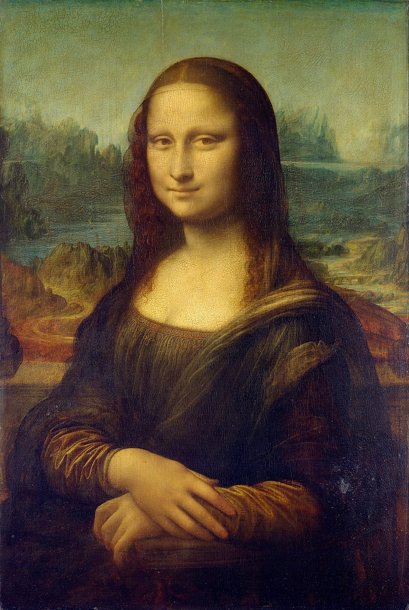
Mona Lisa
Artist: Leonardo da Vinci
Time of creation(estimate): 1495-1498
Exhibition place: Church-convent of Santa Maria delle Grazie(Milan, Italia)
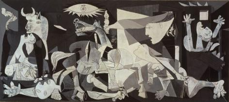
Guernica
Artist: Pablo Picasso
Time of creation: 1937
Exhibition place: Reina Sofia Museum (Madrid, Spain)
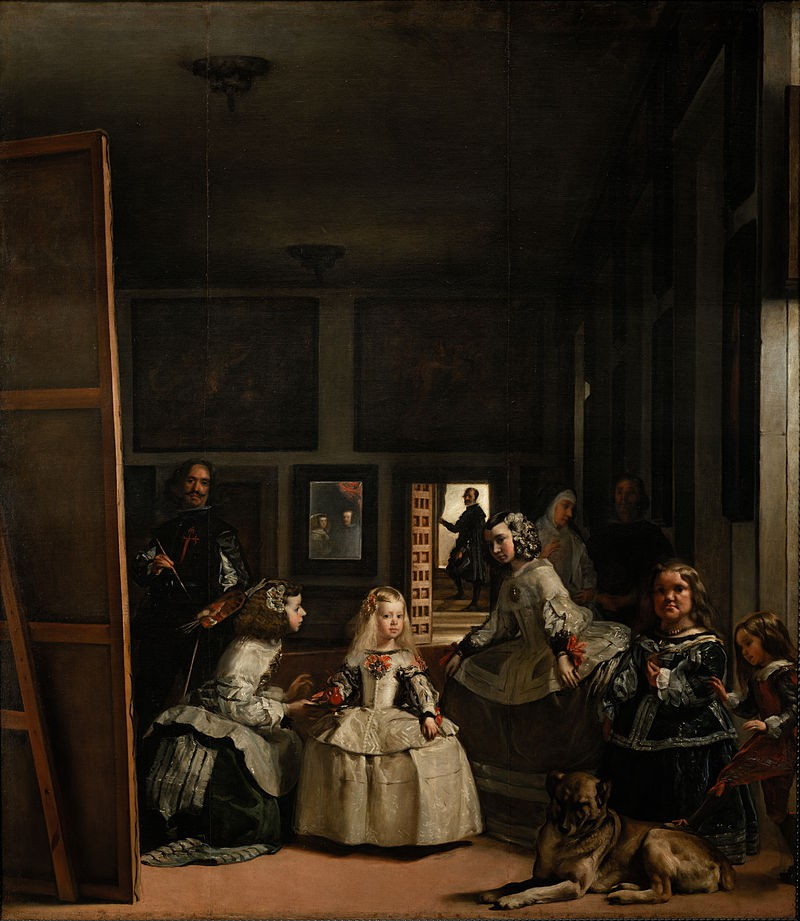
Las Meninas
Artist: Diego Velázquez
Time of creation: 1656
Exhibition place: Reina Sofia Museum (Madrid, Spain)
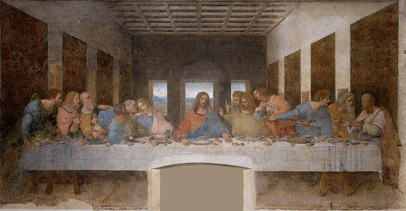
The Last Supper
Artist: Leonardo da Vinci
Time of creation(estimate): 1495-1498
Exhibition place: Church-convent of Santa Maria delle Grazie(Milan, Italia)
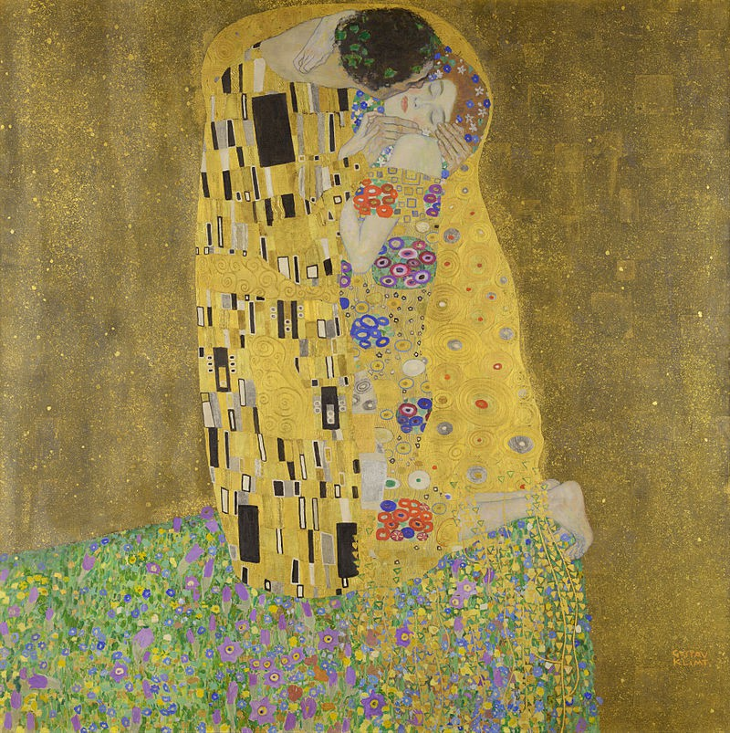
The Kiss
Artist: Gustav
Time of creation(estimate): 1907-1908
Exhibition place: Upper Belvedere Museum (Vienna, Austria)
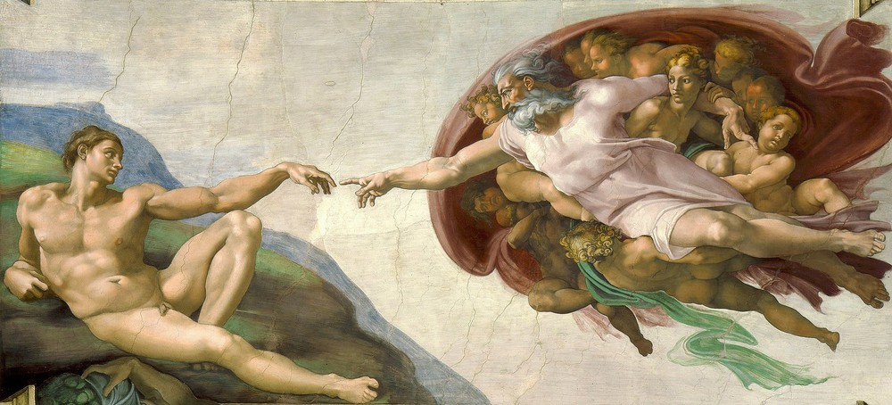
Creation of Adam
Artist: Michelangelo
Time of creation: 1508-1512
Exhibition place: Sistine Chapel (Vatican)
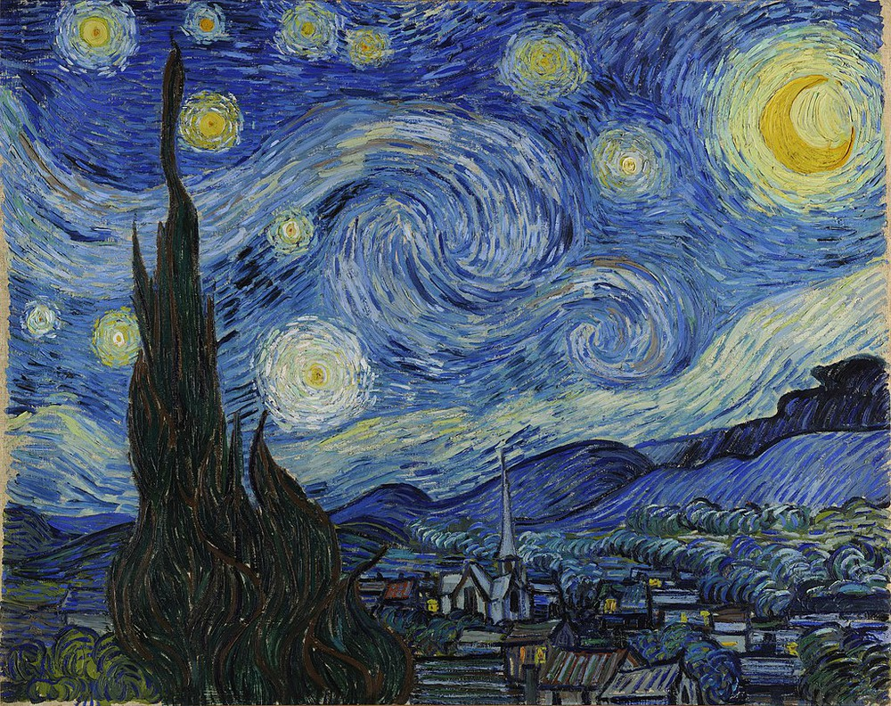
The Starry Night
Artist: Vincent van Gogh
Time of creation: 1889
Exhibition place: Museum of Modern Art (New York, USA)
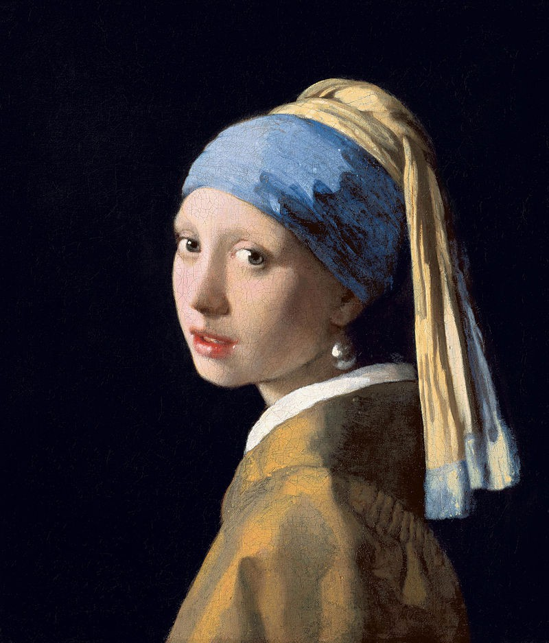
Girl With a Pearl Earring
Artist: Johannes Vermeer
Time of creation(estimate): 1665
Exhibition place: Mauritshuis Museum (The Hague, Netherlands)
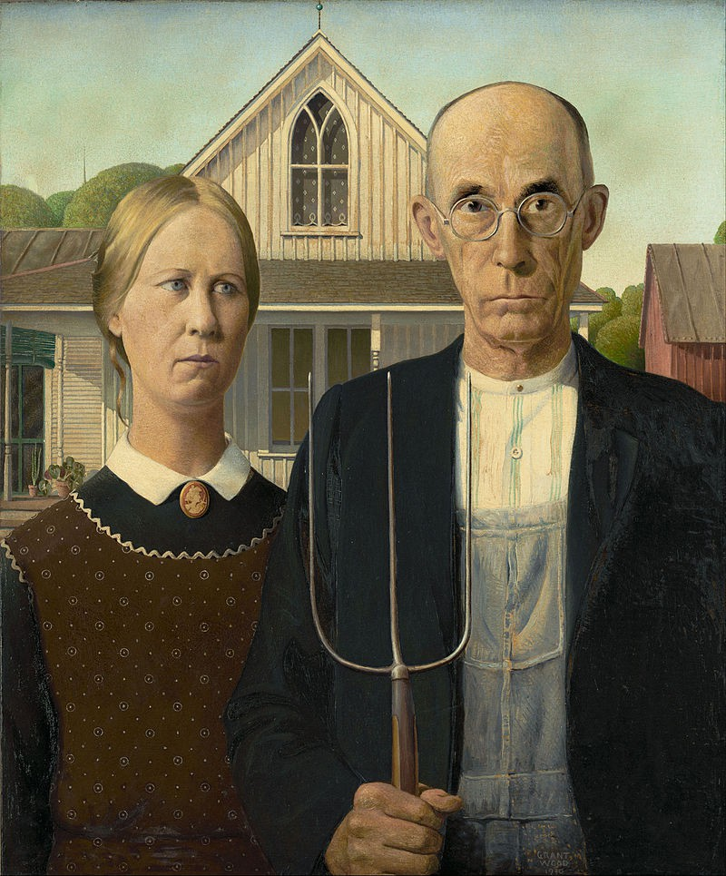
American Gothic
Artist: Grant Wood
Time of creation: 1930
Exhibition place: Art Institute of Chicago, USA
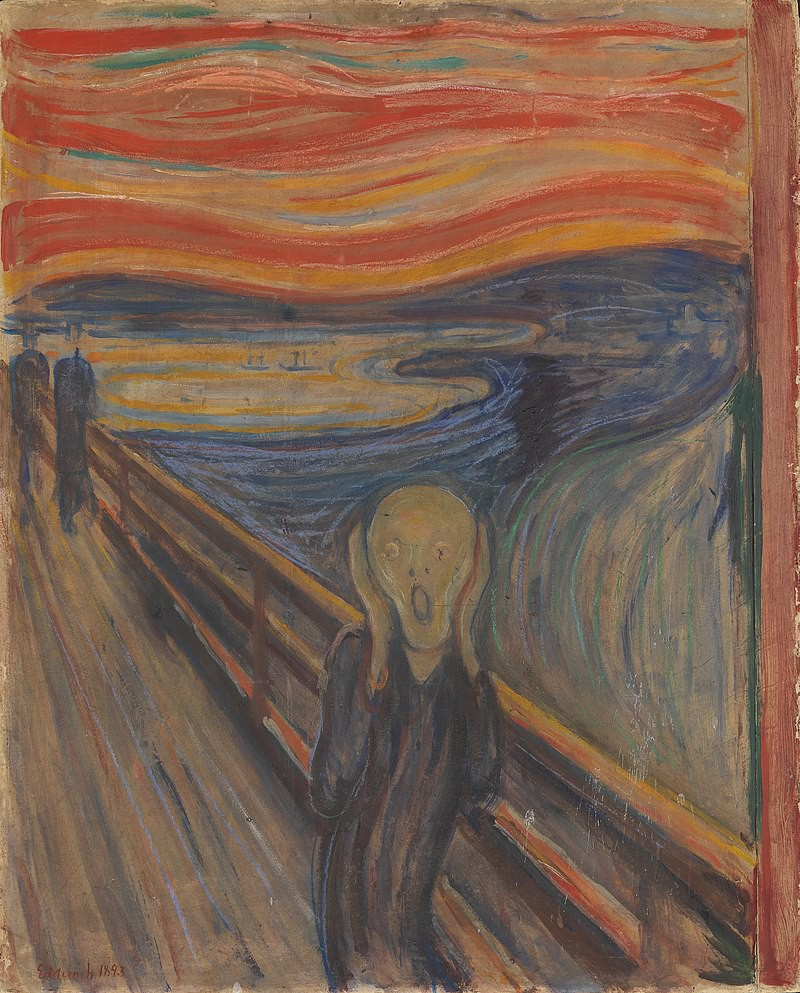
The Scream
Artist: Edvard Munch
Time of creation: 1893
Exhibition place: National Museum (Oslo, Norway – open 2020) and Munch Museum (Oslo - until May 2020)
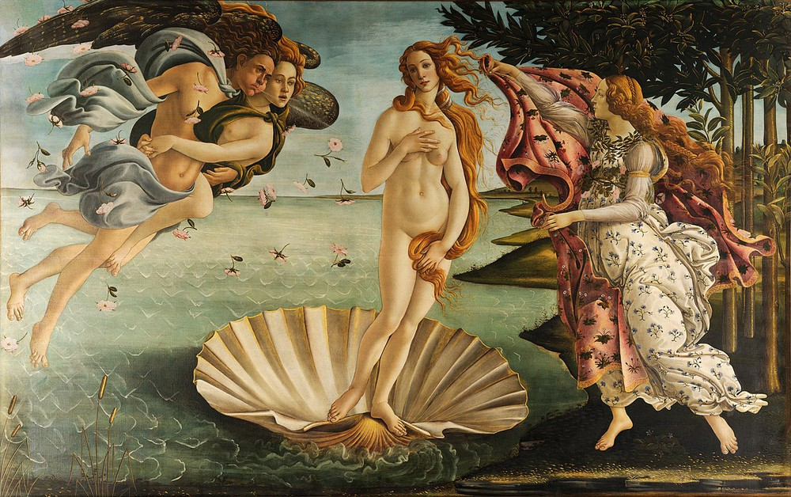
The Birth of Venus
Artist: Sandro Botticelli
Time of creation(estimate): 1485
Exhibition place: Uffizi Gallery Museum (Florence, Italy)
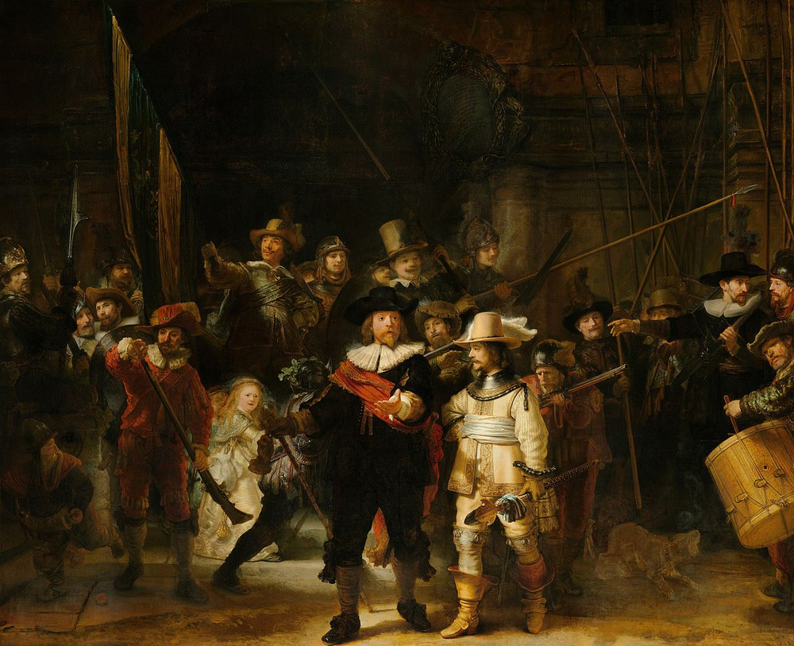
The Night Watch
Artist: Rembrandt van Rijn
Time of creation: 1642
Exhibition place: Rijksmuseum National Museum (Amsterdam, Netherlands)